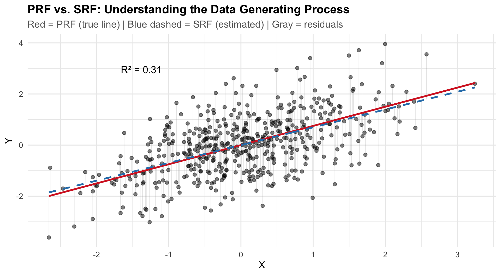

The Linear Regression Estimator and Matrix Algebra
Estimation, Model Fit, and Matrix Algebra
Guidance for Midterm Exam
All material (lectures, readings, examples, etc.) are fair game for the exam.
I do not expect you to entirely reproduce proofs of theorems, but I expect you to recognize and understand the key ideas and be able to apply them.
You may be asked to elaborate on particular points and provide additional context or examples.
This may entail working through particular characteristics of the estimator – e.g., demonstrate the unbiasedness of the OLS estimator.
Guidance for Midterm Exam
Key terms and concepts: Normal equations, OLS estimator, Gauss-Markov theorem, OLS estimator, OLS residuals, etc.
Conceptual applications are common (e.g., what are the assumptions of the Gauss-Markov theorem? What does it tell us about the OLS estimator? How does it help us understand the OLS estimator?)
Interpretation is also important (e.g., what does the OLS estimator tell us about the relationship between \(X\) and \(Y\)?)
Example
Gauss-Markov Assumptions. If the PRF is written as: \(Y_i=\alpha+\beta X_i+\epsilon_i\), and the SRF is expressed as: \(Y_i=a+b X_i+e_i\).
What assumptions are required in order for the OLS estimator to be the best linear unbiased estimator with minimum variance? Describe each assumption in no more than 1-2 sentences.
The Gauss-Markov theorem holds that if these assumptions are met, the OLS estimator of \(b\) is a linear function of \(y_i\) (i.e., \(b=\sum k_i Y_i\)). Please demonstrate this.
The Gauss-Markov theorem holds that if these assumptions are met, the OLS estimator is an unbiased estimator of \(\beta\). Please demonstrate this (hint: use \(b=\sum k_i Y_i\) to show this is the case).
Part I: Estimation in R
The Data Generating Process (DGP)
The DGP is the underlying process that produces the sample data we observe — the PRF that generates the data.
Its the mechanism – we assume – generated the observed data + sampling error.
We can simulate data from a known DGP to understand how sampling, estimation, and inference work together.
Using a function in R
simulate_regression_data <-function(n =500, beta_0 =0, beta_1 =0.2,x_mean =0, x_sd =1, error_sd =1) { X <-rnorm(n, mean = x_mean, sd = x_sd) errors <-rnorm(n, mean =0, sd = error_sd) Y <- beta_0 + beta_1 * X + errorsdata.frame(x = X, y = Y, true_y = beta_0 + beta_1 * X, error = errors)}
PRF vs. SRF: Visualizing the DGP

Key elements of the plot:
PRF (red solid): \(Y_i = \alpha + \beta X_i + \epsilon_i\) — the true line we never see
SRF (blue dashed): \(Y_i = a + bX_i + e_i\) — our estimate from the sample
Residuals (gray): \(e_i = Y_i - \hat{Y}_i\)
The SRF approximates the PRF. How well depends on:
Sample size \(n\)
Error variance \(\sigma^2_\epsilon\)
Variance of \(X\)
Estimation with lm()
fit <-lm(y ~ x, data = sim_dat)summary(fit)
Call:
lm(formula = y ~ x, data = sim_dat)
Residuals:
Min 1Q Median 3Q Max
-2.75568 -0.67016 0.01042 0.63073 2.73709
Coefficients:
Estimate Std. Error t value Pr(>|t|)
(Intercept) -0.0004678 0.0452219 -0.01 0.992
x 0.6960271 0.0465049 14.97 <2e-16 ***
---
Signif. codes: 0 '***' 0.001 '**' 0.01 '*' 0.05 '.' 0.1 ' ' 1
Residual standard error: 1.011 on 498 degrees of freedom
Multiple R-squared: 0.3103, Adjusted R-squared: 0.3089
F-statistic: 224 on 1 and 498 DF, p-value: < 2.2e-16
Estimation with lm()
Key elements of the output:
Element
Meaning
Coefficients
Estimated \(a\), \(b\) with SEs, t-values, p-values
Residual SE
Average distance of observations from the regression line
\(R^2\)
Proportion of variance in \(Y\) explained by \(X\)
F-statistic
Tests whether the model beats the null (\(\bar{Y}\))
Generating Predictions
# Singlepredict(fit, newdata =data.frame(x =1))
1
0.6955593
# Multiple valuespredict(fit, newdata =data.frame(x =seq(0.25, 0.35, by =0.05)))
A <-matrix(c(4,7,2,6), nrow=2, byrow=TRUE)det(A) # nonsingular
[1] 10
B <-matrix(c(2,4,1,2), nrow=2, byrow=TRUE)det(B) # singular — no inverse
[1] 0
For OLS:\(\det(\mathbf{X}^T\mathbf{X}) = 0\) means perfect multicollinearity — the columns of \(\mathbf{X}\) are linearly dependent, and we cannot solve for \(\mathbf{b}\).
Matrix Inversion
For scalars: \(a \cdot a^{-1} = 1\)
For matrices: \(\mathbf{A}\mathbf{A}^{-1} = \mathbf{A}^{-1}\mathbf{A} = \mathbf{I}\)
Requirements:
Only square matrices can have inverses
Must be nonsingular: \(\det(\mathbf{A}) \neq 0\)
The \(2 \times 2\) Inverse
\[\mathbf{A} = \begin{bmatrix} a & b \\ c & d \end{bmatrix} \quad \Longrightarrow \quad \mathbf{A}^{-1} = \frac{1}{ad-bc}\begin{bmatrix} d & -b \\ -c & a \end{bmatrix}\]
The middle two terms are both scalars (a \(1 \times 1\) result), and a scalar equals its own transpose: \(\mathbf{y}^T\mathbf{Xb} = (\mathbf{b}^T\mathbf{X}^T\mathbf{y})^T = \mathbf{b}^T\mathbf{X}^T\mathbf{y}\). So they combine:
In scalar calculus, \(\frac{d}{db} f(b)\) gives a single number. In matrix calculus, \(\frac{\partial f}{\partial \mathbf{b}}\) gives a vector of partial derivatives — one for each element of \(\mathbf{b}\).
If \(\mathbf{b} = [b_0, b_1, \ldots, b_k]^T\), then:
This vector of partial derivatives is the gradient — it points in the direction of steepest ascent. Setting it to \(\mathbf{0}\) means every partial derivative equals zero simultaneously.
The Jacobian
The Jacobian generalizes the derivative to vector-valued functions. If a function maps \(k\) inputs to \(m\) outputs, the Jacobian is the \(m \times k\) matrix of all partial derivatives:
For OLS, our function \(f(\mathbf{b}) = \mathbf{e}^T\mathbf{e}\) is scalar-valued (\(m = 1\)), so the Jacobian is a single row — which is just the transpose of the gradient:
Why does this matter? In the bivariate case, we took two separate derivatives (\(\frac{\partial SSR}{\partial a}\) and \(\frac{\partial SSR}{\partial b}\)) and solved two equations. The gradient/Jacobian does the same thing — but for all \(k+1\) coefficients at once, packaged as a single matrix operation. This is why matrix notation is powerful: one equation replaces \(k+1\) equations.
Matrix Derivative Rules
We need three rules — each mirrors scalar calculus:
\(\frac{\partial}{\partial \mathbf{b}}(\mathbf{b}^T\mathbf{A}\mathbf{b}) = 2\mathbf{A}\mathbf{b}\) (if \(\mathbf{A}\) is symmetric)
The third rule requires \(\mathbf{A}\) to be symmetric. Since \(\mathbf{X}^T\mathbf{X}\) is always symmetric (recall: \((\mathbf{X}^T\mathbf{X})^T = \mathbf{X}^T\mathbf{X}\)), the rule applies.
Applying the Rules
Our function is: \(\;\mathbf{e}^T\mathbf{e} = \underbrace{\mathbf{y}^T\mathbf{y}}_{\text{constant}} - \underbrace{2\mathbf{b}^T\mathbf{X}^T\mathbf{y}}_{\text{linear in } \mathbf{b}} + \underbrace{\mathbf{b}^T\mathbf{X}^T\mathbf{X}\mathbf{b}}_{\text{quadratic in } \mathbf{b}}\)
Term by term:
Term
Rule Applied
Derivative w.r.t. \(\mathbf{b}\)
\(\mathbf{y}^T\mathbf{y}\)
Constant → 0
\(\mathbf{0}\)
\(-2\mathbf{b}^T\mathbf{X}^T\mathbf{y}\)
Linear: \(\frac{\partial}{\partial \mathbf{b}}(\mathbf{c}^T\mathbf{b}) = \mathbf{c}\), where \(\mathbf{c} = \mathbf{X}^T\mathbf{y}\)
\(-2\mathbf{X}^T\mathbf{y}\)
\(\mathbf{b}^T\mathbf{X}^T\mathbf{X}\mathbf{b}\)
Quadratic: \(\frac{\partial}{\partial \mathbf{b}}(\mathbf{b}^T\mathbf{A}\mathbf{b}) = 2\mathbf{A}\mathbf{b}\), where \(\mathbf{A} = \mathbf{X}^T\mathbf{X}\)